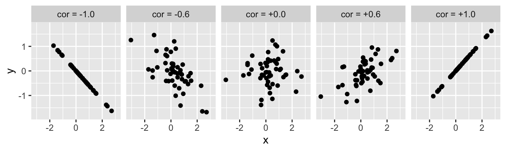
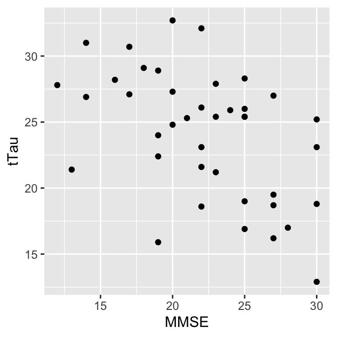
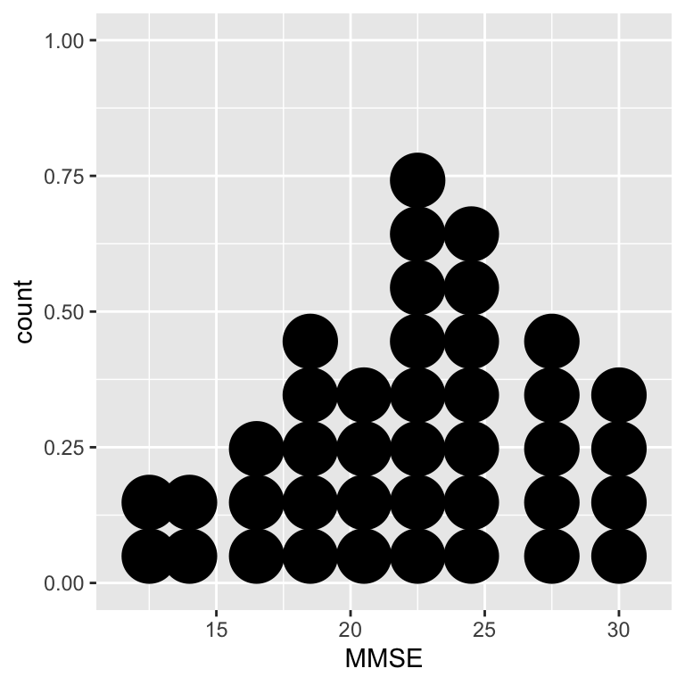
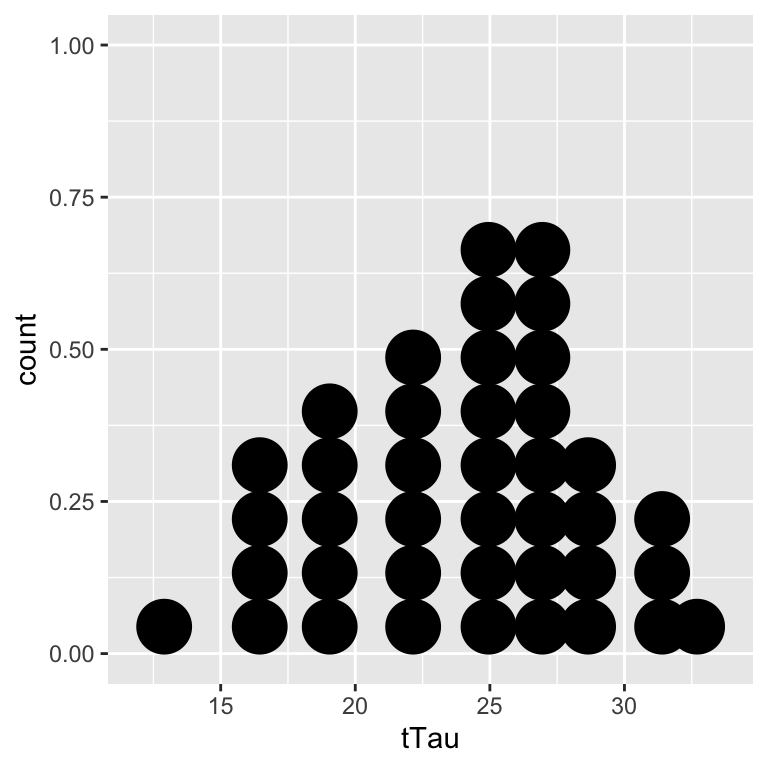

Chapter 11 Correlation tests
We’re going to consider ‘correlation’ in this chapter. A correlation is a statistical measure of association between two variables. An association is any relationship between the variables that makes them dependent in some way: knowing the value of one variable gives you information about the possible values of the other.
The terms ‘association’ and ‘correlation’ are often used interchangeably but strictly speaking, correlation has a narrower definition. Correlation analysis quantifies the degree to which an association tends to a certain pattern via a measure called a correlation coefficient. For example, the correlation coefficient studied below—Pearson’s correlation coefficient—measures the degree to which two variables tend toward a straight line relationship.
There are different methods for quantifying correlation, but these all share a number of properties:
- If there is no relationship between the variables, the correlation coefficient will be zero. The closer to 0 the value, the weaker the relationship. A perfect correlation will be either -1 or +1, depending on the direction. This is illustrated in the figure below:

The value of a correlation coefficient indicates the direction and strength of the association, but it says nothing about the steepness of the relationship. A correlation coefficient is just a number, so it can’t tell us exactly how one variable depends on the other.
Correlation coefficients do not describe ‘directional’ or ‘casual’ relationships. We can’t use correlations to make predictions about one variable based on knowledge of another or make statements about the effect of one variable on the other.
A correlation coefficient doesn’t tell us whether an association is likely to be ‘real’ or not. We have to use a statistical significance test to evaluate whether a correlation may be different from zero. Like any statistical test, this requires certain assumptions about the variables to be met.
We’re going to make sense of all this by studying one particular correlation coefficient in this chapter: Pearson’s product-moment correlation coefficient (\(r\)). Various measures of association exist, so why focus on this one? Well… once you know how to work with one type of correlation in R, it isn’t hard to use another. Pearson’s product-moment correlation coefficient is the most well-known, which means it is as good a place as any to learn about correlation analysis.
11.1 Pearson’s product-moment correlation
What do we need to know about Pearson’s product-moment correlation? Let’s start with the naming conventions. People often use “Pearson’s correlation coefficient” or “Pearson’s correlation” as a convenient shorthand because writing “Pearson’s product-moment correlation coefficient” all the time soon becomes tedious. If we want to be concise, we can use the standard mathematical symbol to denote Pearson’s correlation coefficient—lower case ‘\(r\)’.
The one thing we absolutely have to know about Pearson’s correlation coefficient is that it is a measure of linear association between numeric variables. This means Pearson’s correlation is appropriate when numeric variables follow a ‘straight-line’ relationship. That doesn’t mean they have to be perfectly related, by the way. It simply means there shouldn’t be any ‘curviness’ to their pattern of association5.
Finally, calculating Pearson’s correlation coefficient serves to estimate the strength of an association. An estimate can’t tell us whether that association is likely to be ‘real’ or not. We need a statistical test to tackle that question. There is a standard parametric test associated with Pearson’s correlation coefficient. Unfortunately, this does not have its own name. We will call it “Pearson’s correlation test” to distinguish the test from the coefficient. Just keep in mind these are not ‘official’ names.
11.1.1 Pearson’s correlation test
The logic underpinning Pearson’s correlation test is the same as we’ve seen in previous tests:
- Define a null hypothesis.
- Calculate an appropriate test statistic.
- Work out the null distribution of that statistic.
- Use this to calculate a p-value from the observed coefficient.
We won’t work through the details other than to note a few important aspects:
- When working with Pearson’s correlation coefficient, the ‘no effect’ null hypothesis corresponds to one of zero (linear) association between the two variables (\(r=0\)).
- The test statistic associated with \(r\) turns out to be a t-statistic. This has nothing to do with comparing means—t-statistics pop up all the time in frequentist statistics.
Like any parametric technique, Pearson’s correlation test makes several assumptions. These need to be met in order for the statistical test to be reliable. The assumptions are:
- Both variables are measured on an interval or ratio scale.
- The two variables are normally distributed (in the population).
- The relationship between the variables is linear.
The first two requirements should not need any further explanation at this point—we’ve seen them before in the context of the one- and two-sample t-tests. The third one stems from Pearson’s correlation coefficient being a measure of linear association.
Only the linearity assumption needs to be met for Pearson’s correlation coefficient (\(r\)) to be a valid measure of association. As long as the relationship between two variables is linear, \(r\) produces a sensible measure of association. However, the first two assumptions need to be met for the associated statistical test to be appropriate.
That’s enough background and abstract concepts. Let’s see how to perform correlation analysis in R using Pearson’s correlation coefficient.
11.2 Pearson’s product-moment correlation coefficient in R
We will use a new data set to demonstrate correlation analysis. The data live in a file called ‘ALZHEIMERS.CSV’. The code below assumes those data have been read into a tibble called alzheimers. Set that up if you plan to work along.
The plant morph example is not suitable for correlation analysis. We need a new example to review the workflow for correlation tests in R. The example we’re going use is about the association a plasma biomarker with cognitive impairment in patients with Alzheimer’s disease.
In Alzheimer's disease (AD) patients, brain degeneration is associated with the accumulation of tau protein tangles in the brain. Studies have shown that total tau (t-Tau) levels are higher in the plasma of AD patients than in healthy subjects. A group of biomedical researchers are interested in using plasma t-Tau to assess the extent of AD progression. They have designed a sensitive assay to measure plasma t-Tau. The team recruits 40 AD patients to a pilot study designed to evaluate the new assay. Each patient is undergoes a mini-mental state examination (MMSE) to assess the degree of cognitive impairment (defined as score < 26). Their t-Tau levels are then measured using the new assay.
11.2.1 Visualising the data and checking the assumptions
We can start by printing some information about the alzheimers data:
glimpse(alzheimers)## Rows: 40
## Columns: 2
## $ MMSE <dbl> 25, 20, 22, 14, 25, 22, 28, 23, 20, 16, 19, 30, 21, 12, 30, 19, 2…
## $ tTau <dbl> 19.0, 24.8, 23.1, 26.9, 26.0, 21.6, 17.0, 27.9, 32.7, 28.2, 15.9,…There are 40 observations (rows) and two variables (columns) in this data set. The two variables, MMSE and tTau, contain patient’s MMSE scores and t-Tau protein concentrations, respectively.
Always explore the data thoroughly before carrying out a statistical analysis. To begin, we can visualise the form of the association with a scatter plot:
ggplot(alzheimers, aes(x = MMSE, y = tTau)) +
geom_point()
There appears to be a negative association between cognitive performance and the assayed t-Tau levels. The relationship seems to follow a ‘straight line’ pattern, meaning Pearson’s correlation may be a reasonable measure of association for these data (assumptions #3).
Before confirming the association with a Pearson correlation test, we should determine if it is appropriate to carry out the planned test. We are working with numeric variables measured in ratio scale—that’s assumption #1 dealt with. What about their distributions (assumptions #2)? Here’s a quick visual summary:
ggplot(alzheimers, aes(x = MMSE)) +
geom_dotplot(binwidth = 2)
ggplot(alzheimers, aes(x = tTau)) +
geom_dotplot(binwidth = 2)
It is impossible to be 100% sure with such a small data set, but these plots suggest there is no obvious problem with the normality assumption—both distributions are roughly ‘bell-shaped’.
That’s all three assumptions met: 1) the variables are on a ratio scale, 2) the normality assumption is met, and 3) the abundance relationship is linear. It looks like the statistical test should give reliable results.
11.2.2 Doing the test
Let’s proceed with the correlation analysis. We use the cor.test function to do this in R:
cor.test(~ MMSE + tTau, method = "pearson", data = alzheimers)We have suppressed the output here to focus on how the function works:
- We use the R formula syntax to determine which pair of variables are analysed. The
cor.testfunction expects the two variable names to appear to the right of the~, separated by a+symbol, with nothing on the left. - We use
method = "pearson"to control which type of correlation coefficient was calculated. The default method is Pearson’s correlation, but it never hurts to be explicit, so we wrotemethod = "pearson"anyway. - When we use the formula syntax, as we are doing here, we have to tell the function where to find the variables. That’s the
data = alzheimerspart.
Notice that cor.test uses a different convention from t.test to specify the formula. t.test places one variable on the left and the other variable on the right-hand side of the ~ (e.g. MMSE ~ tTau), whereas cor.test requires both two variables to appear to the right of the ~, separated by a + symbol. This convention exists to emphasise the absence of ‘directionality’ in correlations—neither variable has a special status.
The output from cor.test is, however, very similar to that produced by the t.test function. Here it is:
##
## Pearson's product-moment correlation
##
## data: MMSE and tTau
## t = -3.4685, df = 38, p-value = 0.001317
## alternative hypothesis: true correlation is not equal to 0
## 95 percent confidence interval:
## -0.6956181 -0.2111049
## sample estimates:
## cor
## -0.4903671We won’t step through most of this as its meaning should be clear. The t = -3.4685, df = 38, p-value = 0.001317 line is the one we really care about:
- The first part says that the test statistic associated with the test is a t-statistic, where
t = -3.4685. Remember, this has nothing to do with ‘comparing means’. - Next, we see the degrees of freedom for the test. Can you see where this comes from? It is \(n-2\), where \(n\) is the sample size. R uses the degrees of freedom and the t-statistic determine the p-value.
- The p-value is generated under the null hypothesis of zero correlation (\(r = 0\)). Since p < 0.05, we conclude that there is a statistically significant negative correlation between t-Tau levels and MMSE.
What is the correlation between t-Tau levels and MMSE? That’s given at the bottom of the test output: \(-0.49\). As expected from the scatter plot, there is a moderate negative association between the two measurements.
11.2.3 Reporting the result
When using Pearson’s method, we should report the value of the correlation coefficient, the sample size, and the p-value6. Here’s how to report the results of this analysis:
There is a negative correlation between t-Tau and MMSE scores among patients (r=-0.49, n=38, p < 0.01).
Notice that we stated the direction of the association. It is important to do that because both the direction and strength of the association are relevant to the clinical context. As hoped, elevated plasma t-Tau levels determined by the new assay are associated with reduced cognitive performance.
11.3 Next steps
Our correlation analysis only characterises the strength and direction of the association between t-Tau and MMSE scores. We would need to use a different kind of analysis to say anything about how MMSE scores change with t-Tau concentration. That’s the focus of our next topic: simple linear regression.
If non-linear associations are apparent it’s generally better to use a different correlation coefficient (we’ll consider one alternative later in the book).↩︎
Some people like to report the the t-statistic alongside the correlation coefficient, the degrees of freedom, and the p-value. There’s no need to do this though because the t-statistic is calculated directly from the correlation coefficient and the degrees of freedom.↩︎